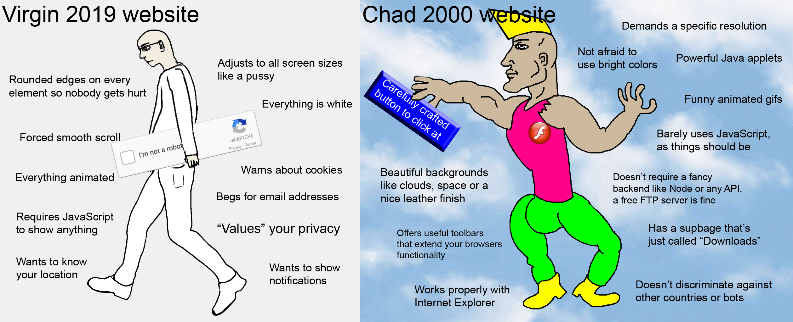

## Analyse a website

### Chrome DevTools You can use the [Inspector](https://developers.google.com/web/tools/chrome-devtools) to edit pages, test responsive viewports and diagnose problems.
### Step 0 If you haven't already, find one website that you love and one that you hate. (5 minutes)
### Websites about new websites [Hover States](https://hoverstat.es/) [Klikkentheke](https://klikkentheke.com/) [Websites about new websites channel](https://www.are.na/laurel-schwulst/websites-about-new-websites) [Internet Explorers channel](https://www.are.na/gemma-copeland/internet-explorers)
Step 1
Download and fill out
this questionnaire
. (20 minutes)
### Step 2 Form groups of four or so. Share your website analysis with each other. (30 minutes)
## Bonus round!
### Step 0 Setup a typical website folder structure in your GitHub Pages directory.
### Step 1 Create a new HTML file. Add your questionnaire answers and mark them up using HTML tags.
### Step 1 Test your results by opening the html file in Chrome.
### Step 2 Commit your html file to your Github repository, and add a link to the page on your homepage.
### Hyperlinks [Everything Easy is Hard Again](https://frankchimero.com/writing/everything-easy-is-hard-again/) [Why GOV.UK content should be published in HTML and not PDF](https://gds.blog.gov.uk/2018/07/16/why-gov-uk-content-should-be-published-in-html-and-not-pdf/) [Resilient Web Design](https://resilientwebdesign.com/)